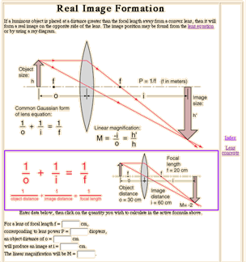

Doing It by the Numbers: Javascript Calculations in Web-Based Instructional Material, Carl Rod Nave
Page 3
Another value of the Javascript calculations is to put the calculation directly into an illustrated context where it can be related to concepts. For example, the concept of real image formation can be illustrated with the common ray diagram and the calculation can be included. The additional element of strategy here is to use an active formula in the form of an image map.
|

|
Once you have entered relevant data, you can just click on the symbol for the quantity you wish to calculate. This can quickly lead even the novice into an exploration of what happens when you change the object position, strength of lens, etc. Links are provided to virtual images with both positive and negative lenses, so you can explore a wide gamut of simple imaging situations numerically.
|
Continue to page 4
|
AAPT Guelph Paper Outline
Top of Paper |